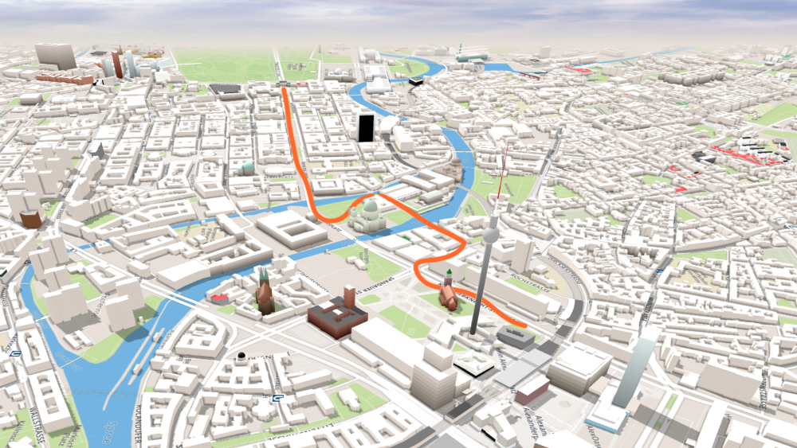
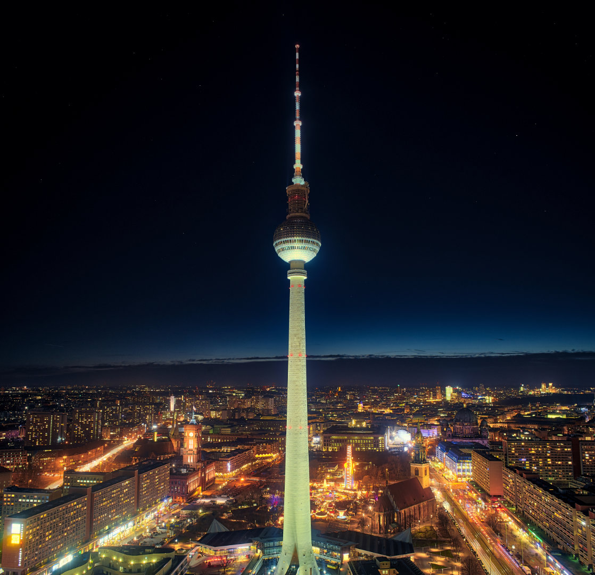
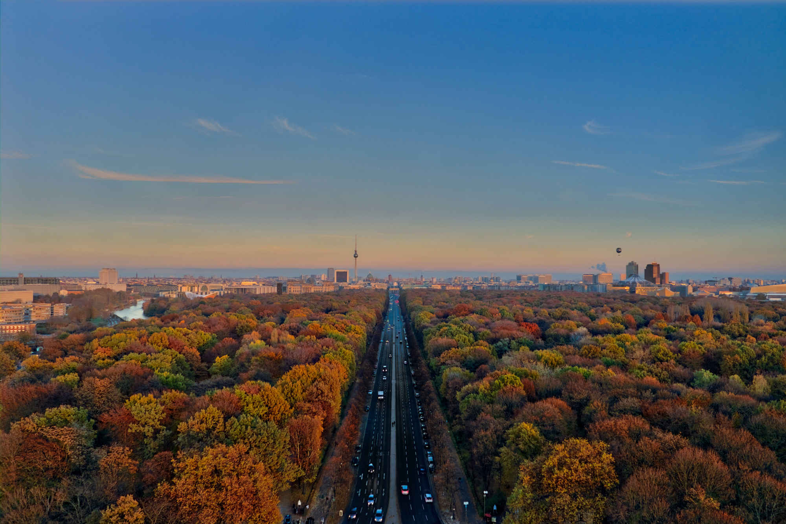

The journey
Our journey starts at Alexanderplatz and continues westwards towards the Reichstag. The entire trip should take about 4 - 5 hours depending on your sightseeing hunger. Follow our map to see most of the places listed below.
Park Inn
The hotel that compared to the TV Tower doesn't look so majestic on the other hand offers something special. A view of Berlin for 1/3rd of the price and with the famous tower included in the view as a bonus you never have to wait in a line. Or come back after sunset like us and take this cool night view picture.
Eschschloraque & CURRY 61
Eschschloraque - is a pub/caffe located in an inner yard shielded from the noises of the main central streets. The yard is one of few places in the center which has kept its original 90's vibe and survived the recent rentless gentrification. If you feel thirsty checkout Eschschloraque, get a beer or coffe and enjoy the unique atmosphere. Once you leave there is a CURRY 61 ready to satisfy your hunger for the classic Berlin fast food dish - currywurst.
The Reichstag
The Reichstag building offers a free tour (make a reservation in advance here). While the view is not one of the greatest in Berlin, the history and importance of the bulding cannot be understated. You will be taken to the roof and offered a walk in the glass dome build on the top of the building.
Siegessaule
Our favorite view of Berlin was here, for a price of only 3 euros you get to see skyline of both former East and West Berlin. Just be aware that there is no elevator and the stairs can be quite narrow.
Additional landmarks
The holocaust memorial
The memorial for the victims of the holocaust is very close to the Reichstag. This place gets very tense once you step deeper which should symbolize the unexpeted grasp of totality
Potsdamerplatz
The square built on the place of former Berlin wall is still somewhat controversial in Berlin. The rapid development after the fall of the wall means most of the architecture around resembles modern office areas and retail space. Check Sony center at night for some interestint views.
Tiergarten
Walk through the Berlin's largest park and explore its hidden lakes and memorials. If you manage to get all the way through you will end up in the center of the former west Berlin